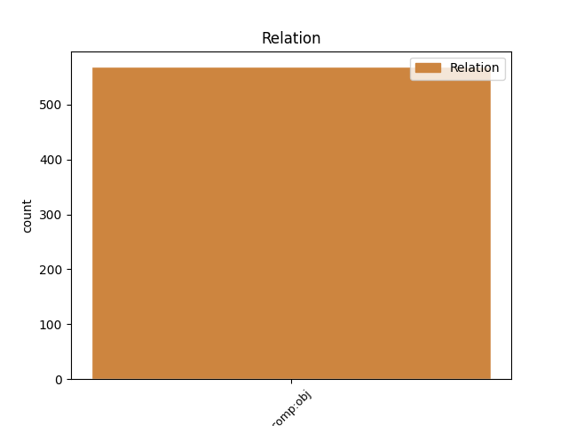
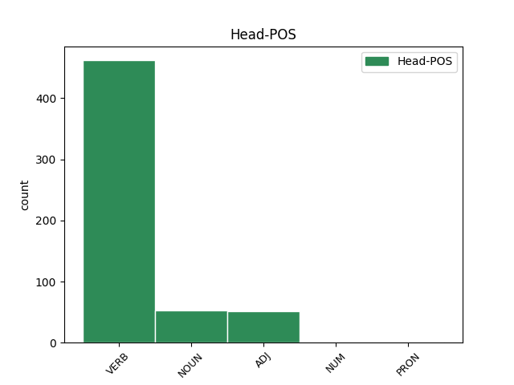
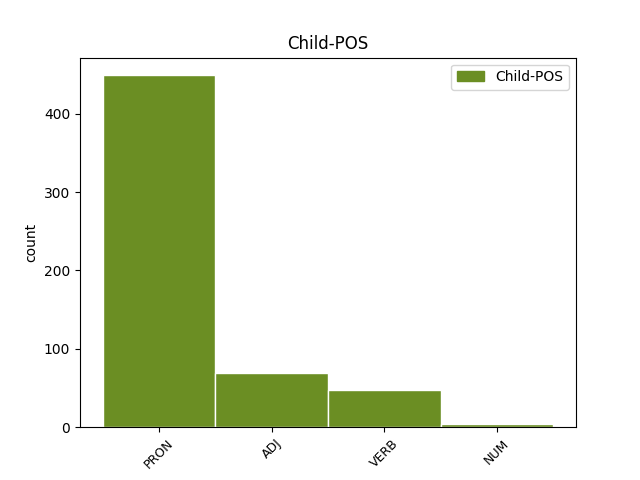

Distribution of features within this leaf



Agreement Rules sorted by frequency.
- When the dependent token is the direct object complements(comp:obj) of the head token, and the dependent token is PRON.
1 sed _ _ _ _ 0 _ _ _
2 quamvis _ _ _ _ 0 _ _ _
3 huiusmodi _ _ _ _ 0 _ _ _
4 animalia _ _ _ _ 0 _ _ _
5 formam _ _ _ _ 0 _ _ _
6 quae _ _ _ _ 0 _ _ _
7 est _ _ _ _ 0 _ _ _
8 principium _ _ _ _ 0 _ _ _
9 motus _ _ _ _ 0 _ _ _
10 , _ _ _ _ 0 _ _ _
11 per _ _ _ _ 0 _ _ _
12 sensum _ _ _ _ 0 _ _ _
13 accipiant _ _ _ _ 0 _ _ _
14 , _ _ _ _ 0 _ _ _
15 non _ _ _ _ 0 _ _ _
16 tamen _ _ _ _ 0 _ _ _
17 per _ _ _ _ 0 _ _ _
18 seipsa _ _ _ _ 0 _ _ _
19 praestituunt _ _ _ _ 0 _ _ _
20 sibi _ _ _ _ 0 _ _ _
21 finem _ _ _ _ 0 _ _ _
22 suae _ _ _ _ 0 _ _ _
23 operationis _ _ _ _ 0 _ _ _
24 , _ _ _ _ 0 _ _ _
25 vel _ _ _ _ 0 _ _ _
26 sui _ _ _ _ 0 _ _ _
27 motus _ _ _ _ 0 _ _ _
28 ; _ _ _ _ 0 _ _ _
29 sed _ _ _ _ 0 _ _ _
30 est _ _ _ _ 0 _ _ _
31 eis _ _ _ _ 0 _ _ _
32 inditus _ _ _ _ 0 _ _ _
33 a _ _ _ _ 0 _ _ _
34 natura _ _ _ _ 0 _ _ _
35 , _ _ _ _ 0 _ _ _
36 cuius _ _ _ _ 0 _ _ _
37 instinctu _ _ _ _ 0 _ _ _
38 ad _ _ _ _ 0 _ _ _
39 aliquid aliquis PRON F1|grn1|casD|gen3 Case=Acc|Degree=Pos|Gender=Neut|Number=Sing|PronType=Ind 40 comp:obj _ _
40 agendum ago VERB L2|modE|grp1|casD Case=Acc|Degree=Pos|Number=Sing|VerbForm=Ger|Voice=Act 0 _ _ _
41 moventur _ _ _ _ 0 _ _ _
42 per _ _ _ _ 0 _ _ _
43 formam _ _ _ _ 0 _ _ _
44 sensu _ _ _ _ 0 _ _ _
45 apprehensam _ _ _ _ 0 _ _ _
46 . _ _ _ _ 0 _ _ _
1 sed _ _ _ _ 0 _ _ _
2 si _ _ _ _ 0 _ _ _
3 angelus _ _ _ _ 0 _ _ _
4 superior _ _ _ _ 0 _ _ _
5 cognoscat _ _ _ _ 0 _ _ _
6 per _ _ _ _ 0 _ _ _
7 unam _ _ _ _ 0 _ _ _
8 formam _ _ _ _ 0 _ _ _
9 universalem _ _ _ _ 0 _ _ _
10 diversa _ _ _ _ 0 _ _ _
11 , _ _ _ _ 0 _ _ _
12 quae _ _ _ _ 0 _ _ _
13 inferior _ _ _ _ 0 _ _ _
14 angelus _ _ _ _ 0 _ _ _
15 cognoscit _ _ _ _ 0 _ _ _
16 per _ _ _ _ 0 _ _ _
17 plures _ _ _ _ 0 _ _ _
18 formas _ _ _ _ 0 _ _ _
19 speciales _ _ _ _ 0 _ _ _
20 , _ _ _ _ 0 _ _ _
21 sequitur _ _ _ _ 0 _ _ _
22 quod _ _ _ _ 0 _ _ _
23 angelus _ _ _ _ 0 _ _ _
24 superior _ _ _ _ 0 _ _ _
25 utitur _ _ _ _ 0 _ _ _
26 una _ _ _ _ 0 _ _ _
27 forma _ _ _ _ 0 _ _ _
28 universali _ _ _ _ 0 _ _ _
29 ad _ _ _ _ 0 _ _ _
30 cognoscendum cognosco VERB L2|modE|grp1|casD Case=Acc|Degree=Pos|Number=Sing|VerbForm=Ger|Voice=Act 0 _ _ _
31 diversa diversus ADJ B1|grn1|casM|gen3|vgr1 Case=Acc|Degree=Pos|Gender=Neut|Number=Plur 30 comp:obj _ SpaceAfter=No
32 . _ _ _ _ 0 _ _ _
1 et _ _ _ _ 0 _ _ _
2 propter _ _ _ _ 0 _ _ _
3 hoc _ _ _ _ 0 _ _ _
4 sicut _ _ _ _ 0 _ _ _
5 elementa _ _ _ _ 0 _ _ _
6 in _ _ _ _ 0 _ _ _
7 partibus _ _ _ _ 0 _ _ _
8 universi _ _ _ _ 0 _ _ _
9 habent _ _ _ _ 0 _ _ _
10 formas _ _ _ _ 0 _ _ _
11 determinatas _ _ _ _ 0 _ _ _
12 , _ _ _ _ 0 _ _ _
13 ratione _ _ _ _ 0 _ _ _
14 quarum _ _ _ _ 0 _ _ _
15 sunt _ _ _ _ 0 _ _ _
16 in _ _ _ _ 0 _ _ _
17 perfectione _ _ _ _ 0 _ _ _
18 universi _ _ _ _ 0 _ _ _
19 , _ _ _ _ 0 _ _ _
20 sicut _ _ _ _ 0 _ _ _
21 corpora _ _ _ _ 0 _ _ _
22 mixta _ _ _ _ 0 _ _ _
23 ; _ _ _ _ 0 _ _ _
24 ita _ _ _ _ 0 _ _ _
25 et _ _ _ _ 0 _ _ _
26 humores _ _ _ _ 0 _ _ _
27 sunt _ _ _ _ 0 _ _ _
28 de _ _ _ _ 0 _ _ _
29 perfectione _ _ _ _ 0 _ _ _
30 corporis _ _ _ _ 0 _ _ _
31 humani _ _ _ _ 0 _ _ _
32 , _ _ _ _ 0 _ _ _
33 sicut _ _ _ _ 0 _ _ _
34 et _ _ _ _ 0 _ _ _
35 aliae _ _ _ _ 0 _ _ _
36 partes _ _ _ _ 0 _ _ _
37 , _ _ _ _ 0 _ _ _
38 quamvis _ _ _ _ 0 _ _ _
39 non _ _ _ _ 0 _ _ _
40 perveniant _ _ _ _ 0 _ _ _
41 ad _ _ _ _ 0 _ _ _
42 totam _ _ _ _ 0 _ _ _
43 perfectionem _ _ _ _ 0 _ _ _
44 sicut _ _ _ _ 0 _ _ _
45 aliae _ _ _ _ 0 _ _ _
46 partes _ _ _ _ 0 _ _ _
47 , _ _ _ _ 0 _ _ _
48 nec _ _ _ _ 0 _ _ _
49 elementa _ _ _ _ 0 _ _ _
50 habent _ _ _ _ 0 _ _ _
51 ita _ _ _ _ 0 _ _ _
52 perfectas perficio VERB L2|modM|tem4|grp1|casM|gen2 Aspect=Perf|Case=Acc|Degree=Pos|Gender=Fem|Number=Plur|Tense=Past|VerbForm=Part|Voice=Pass 53 comp:obj _ _
53 formas forma NOUN A1|grn1|casM|gen2 Case=Acc|Degree=Pos|Gender=Fem|Number=Plur 0 _ _ _
54 sicut _ _ _ _ 0 _ _ _
55 mixta _ _ _ _ 0 _ _ _
56 . _ _ _ _ 0 _ _ _
1 qui _ _ _ _ 0 _ _ _
2 enim _ _ _ _ 0 _ _ _
3 novit _ _ _ _ 0 _ _ _
4 quod _ _ _ _ 0 _ _ _
5 triangulus _ _ _ _ 0 _ _ _
6 habet _ _ _ _ 0 _ _ _
7 tres _ _ _ _ 0 _ _ _
8 angulos _ _ _ _ 0 _ _ _
9 aequales _ _ _ _ 0 _ _ _
10 duobus duo NUM F1|grn1|casL|gen1 Case=Dat|Degree=Pos|Gender=Masc|Number=Plur|NumType=Card 11 comp:obj _ _
11 rectis rego VERB L2|modM|tem4|grp1|casL|gen1 Aspect=Perf|Case=Dat|Degree=Pos|Gender=Masc|Number=Plur|Tense=Past|VerbForm=Part|Voice=Pass 0 _ _ _
12 , _ _ _ _ 0 _ _ _
13 quasi _ _ _ _ 0 _ _ _
14 opinabile _ _ _ _ 0 _ _ _
15 quoddam _ _ _ _ 0 _ _ _
16 probabili _ _ _ _ 0 _ _ _
17 ratione _ _ _ _ 0 _ _ _
18 , _ _ _ _ 0 _ _ _
19 quia _ _ _ _ 0 _ _ _
20 sic _ _ _ _ 0 _ _ _
21 a _ _ _ _ 0 _ _ _
22 sapientibus _ _ _ _ 0 _ _ _
23 dicitur _ _ _ _ 0 _ _ _
24 , _ _ _ _ 0 _ _ _
25 nondum _ _ _ _ 0 _ _ _
26 hoc _ _ _ _ 0 _ _ _
27 comprehendit _ _ _ _ 0 _ _ _
28 ; _ _ _ _ 0 _ _ _
29 sed _ _ _ _ 0 _ _ _
30 solum _ _ _ _ 0 _ _ _
31 ille _ _ _ _ 0 _ _ _
32 qui _ _ _ _ 0 _ _ _
33 hoc _ _ _ _ 0 _ _ _
34 novit _ _ _ _ 0 _ _ _
35 quasi _ _ _ _ 0 _ _ _
36 quoddam _ _ _ _ 0 _ _ _
37 scibile _ _ _ _ 0 _ _ _
38 , _ _ _ _ 0 _ _ _
39 per _ _ _ _ 0 _ _ _
40 medium _ _ _ _ 0 _ _ _
41 quod _ _ _ _ 0 _ _ _
42 est _ _ _ _ 0 _ _ _
43 causa _ _ _ _ 0 _ _ _
44 . _ _ _ _ 0 _ _ _
Disagree Examples:
1 et _ _ _ _ 0 _ _ _
2 propter _ _ _ _ 0 _ _ _
3 hoc _ _ _ _ 0 _ _ _
4 in _ _ _ _ 0 _ _ _
5 nobis _ _ _ _ 0 _ _ _
6 ultima _ _ _ _ 0 _ _ _
7 felicitas _ _ _ _ 0 _ _ _
8 est _ _ _ _ 0 _ _ _
9 in _ _ _ _ 0 _ _ _
10 intelligendo intellego VERB L2|modE|grp1|casF Case=Abl|Degree=Pos|Number=Sing|VerbForm=Ger|Voice=Act 0 _ _ _
11 altissimum _ _ _ _ 0 _ _ _
12 intelligibile intelligibilis ADJ C1|grn1|casD|gen3|vgr1 Case=Acc|Degree=Pos|Gender=Neut|Number=Sing 10 comp:obj _ SpaceAfter=No
13 . _ _ _ _ 0 _ _ _
1 quicumque _ _ _ _ 0 _ _ _
2 igitur _ _ _ _ 0 _ _ _
3 sibi se PRON F1|grn1|casC|gen1 Case=Dat|Degree=Pos|Gender=Masc|Number=Sing|PronType=Prs|Reflex=Yes 4 comp:obj _ _
4 sufficiens sufficio VERB L2|modD|tem1|grp1|casA|gen1 Case=Nom|Degree=Pos|Gender=Masc|Number=Sing|Tense=Pres|VerbForm=Part|Voice=Act 0 _ _ _
5 est _ _ _ _ 0 _ _ _
6 , _ _ _ _ 0 _ _ _
7 nullo _ _ _ _ 0 _ _ _
8 indigens _ _ _ _ 0 _ _ _
9 , _ _ _ _ 0 _ _ _
10 ille _ _ _ _ 0 _ _ _
11 beatus _ _ _ _ 0 _ _ _
12 est _ _ _ _ 0 _ _ _
13 . _ _ _ _ 0 _ _ _
1 quicumque _ _ _ _ 0 _ _ _
2 igitur _ _ _ _ 0 _ _ _
3 sibi _ _ _ _ 0 _ _ _
4 sufficiens _ _ _ _ 0 _ _ _
5 est _ _ _ _ 0 _ _ _
6 , _ _ _ _ 0 _ _ _
7 nullo nullus PRON F1|grn1|casF|gen3 Case=Abl|Degree=Pos|Gender=Neut|Number=Sing|PronType=Ind 8 comp:obj _ _
8 indigens indigeo VERB K2|modD|tem1|grp1|casA|gen1 Case=Nom|Degree=Pos|Gender=Masc|Number=Sing|Tense=Pres|VerbForm=Part|Voice=Act 0 _ _ _
9 , _ _ _ _ 0 _ _ _
10 ille _ _ _ _ 0 _ _ _
11 beatus _ _ _ _ 0 _ _ _
12 est _ _ _ _ 0 _ _ _
13 . _ _ _ _ 0 _ _ _
1 ipsa _ _ _ _ 0 _ _ _
2 enim _ _ _ _ 0 _ _ _
3 est _ _ _ _ 0 _ _ _
4 quae _ _ _ _ 0 _ _ _
5 propter _ _ _ _ 0 _ _ _
6 aliud _ _ _ _ 0 _ _ _
7 non _ _ _ _ 0 _ _ _
8 desideratur _ _ _ _ 0 _ _ _
9 , _ _ _ _ 0 _ _ _
10 et _ _ _ _ 0 _ _ _
11 ad _ _ _ _ 0 _ _ _
12 quam _ _ _ _ 0 _ _ _
13 terminatur _ _ _ _ 0 _ _ _
14 motus _ _ _ _ 0 _ _ _
15 desiderii _ _ _ _ 0 _ _ _
16 unum unus NUM F1|grn1|casD|gen3 Case=Acc|Degree=Pos|Gender=Neut|Number=Sing|NumType=Card 19 comp:obj _ _
17 propter _ _ _ _ 0 _ _ _
18 aliud _ _ _ _ 0 _ _ _
19 desiderantis desidero VERB J2|modD|tem1|grp1|casB|gen1 Case=Gen|Degree=Pos|Gender=Masc|Number=Sing|Tense=Pres|VerbForm=Part|Voice=Act 0 _ _ _
20 , _ _ _ _ 0 _ _ _
21 ne _ _ _ _ 0 _ _ _
22 sit _ _ _ _ 0 _ _ _
23 infinitus _ _ _ _ 0 _ _ _
24 . _ _ _ _ 0 _ _ _
1 unde _ _ _ _ 0 _ _ _
2 , _ _ _ _ 0 _ _ _
3 etsi _ _ _ _ 0 _ _ _
4 aliquis _ _ _ _ 0 _ _ _
5 propter _ _ _ _ 0 _ _ _
6 spem _ _ _ _ 0 _ _ _
7 beatitudinis _ _ _ _ 0 _ _ _
8 obtinendae _ _ _ _ 0 _ _ _
9 beatus _ _ _ _ 0 _ _ _
10 dicatur _ _ _ _ 0 _ _ _
11 , _ _ _ _ 0 _ _ _
12 nullo _ _ _ _ 0 _ _ _
13 modo _ _ _ _ 0 _ _ _
14 sua _ _ _ _ 0 _ _ _
15 beatitudo _ _ _ _ 0 _ _ _
16 comparatur _ _ _ _ 0 _ _ _
17 eius _ _ _ _ 0 _ _ _
18 beatitudini _ _ _ _ 0 _ _ _
19 qui _ _ _ _ 0 _ _ _
20 eam is PRON F1|grn1|casD|gen2 Case=Acc|Degree=Pos|Gender=Fem|Number=Sing|PronType=Dem,Prs 23 comp:obj _ _
21 iam _ _ _ _ 0 _ _ _
22 actu _ _ _ _ 0 _ _ _
23 consecutus consequor VERB L2|modM|tem4|grp1|casA|gen1|vgr1 Aspect=Perf|Case=Nom|Degree=Pos|Gender=Masc|Number=Sing|Tense=Past|VerbForm=Part|Voice=Pass 0 _ _ _
24 est _ _ _ _ 0 _ _ _
25 . _ _ _ _ 0 _ _ _